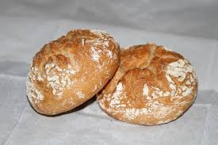
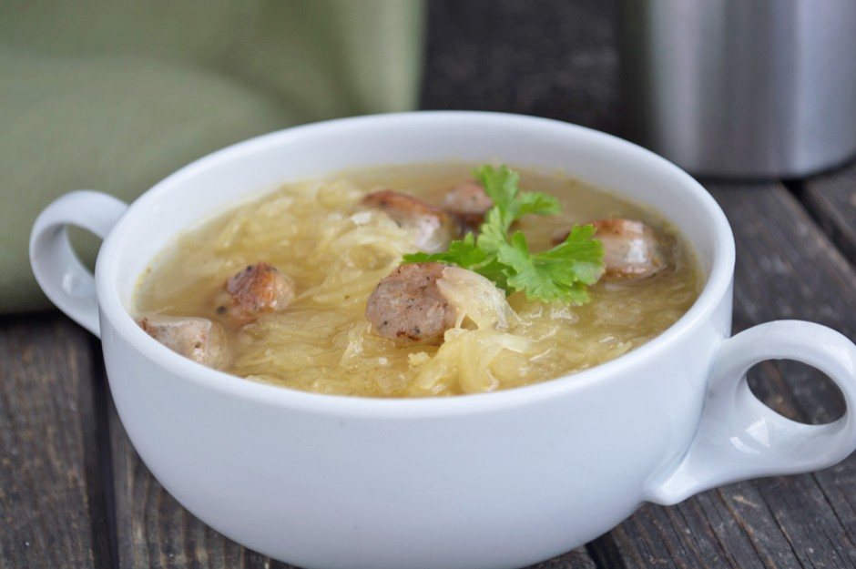
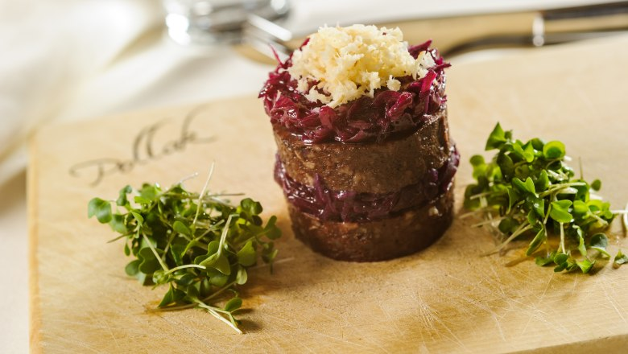
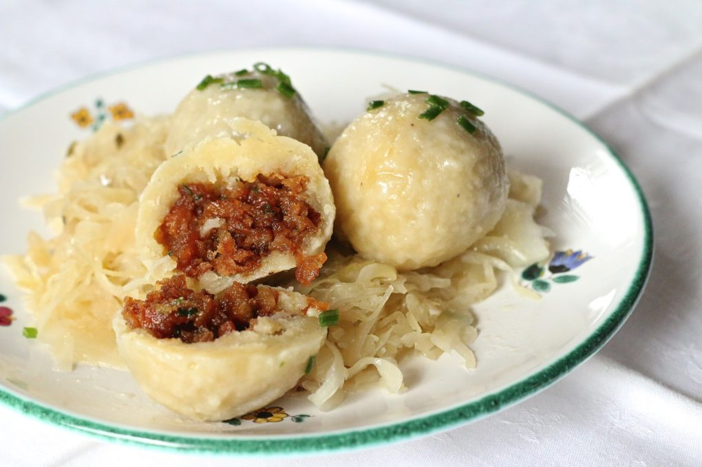
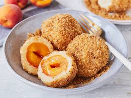
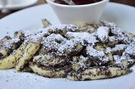
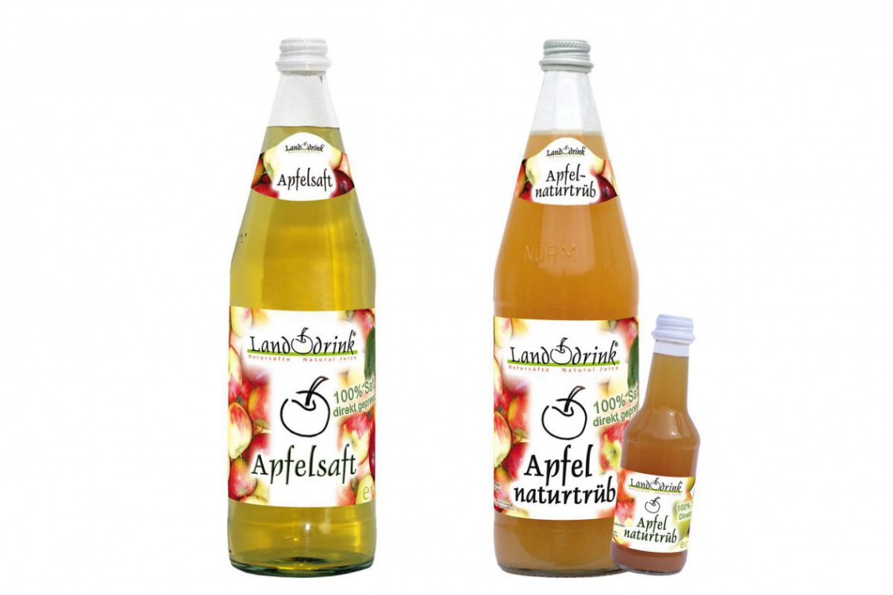
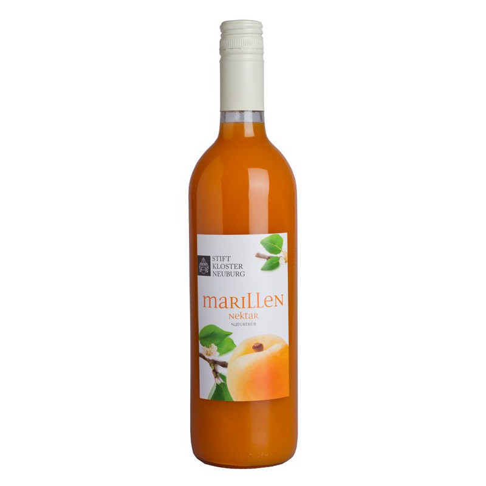
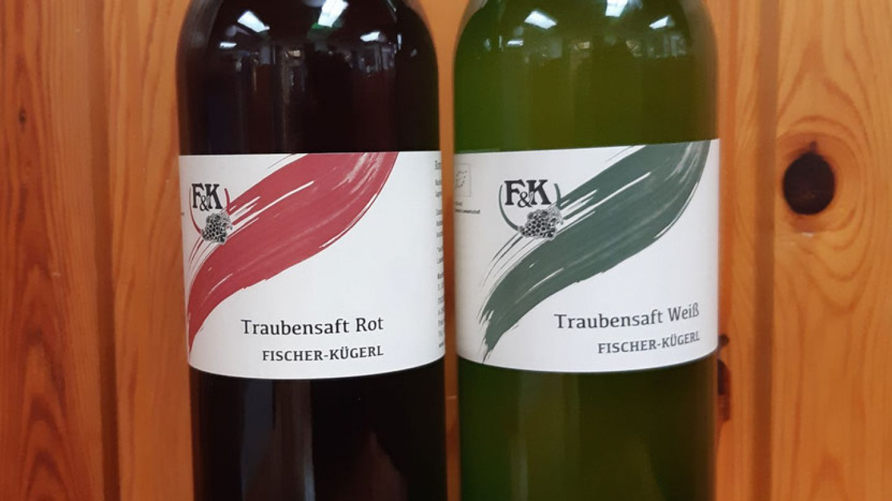

Knusprige, handgefertigte Brötchen aus der Wachau, die oft mit Butter und Schnittlauch oder als Beilage serviert werden.
Waldviertler Krautsuppe ist eine kräftige, wohlschmeckende Suppe aus frischem Weißkraut, Kartoffeln, Speck und regionalen Gewürzen.
Blunze, auch Blutwurst genannt, ist eine traditionelle Wurst, die aus Schweineblut, Speck, Zwiebeln und Gewürzen hergestellt wird und oft in Scheiben geschnitten und mit Rotkraut und Kren serviert wird.
Grammelknödel sind herzhafte Knödel aus Kartoffelteig, gefüllt mit Grammeln (Röstschmalz), die oft mit Sauerkraut serviert werden.
Knödel aus Kartoffelteig, gefüllt mit süßen Marillen aus der Wachau, die mit Butterbröseln bestreut und warm serviert werden.
Ein rosa-glasierter Kuchenwürfel, gefüllt mit Marmelade, Rum und Schokolade, der oft in Kaffeehäusern serviert wird.
Mohnnudeln aus Niederösterreich sind eine süße Spezialität, bestehend aus Erdäpfelteig-Nudeln, die in gemahlenem Mohn und Zucker gewälzt und mit zerlassener Butter serviert werden.
Der niederösterreichische Apfelsaft wird aus regionalen Äpfeln gewonnen und ist für seinen frischen, natürlichen Geschmack bekannt.
Marillensaft begeistert mit seiner fruchtigen Süße und dem intensiven Geschmack sonnengereifter Marillen.
Der Traubensaft stammt von den bekannten Weinregionen und überzeugt mit seinem intensiven, natürlichen Geschmack. Wie beim Wein gibt es den Trabensaft in weiß und rot.
